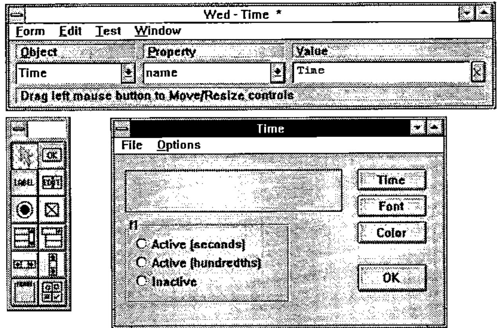
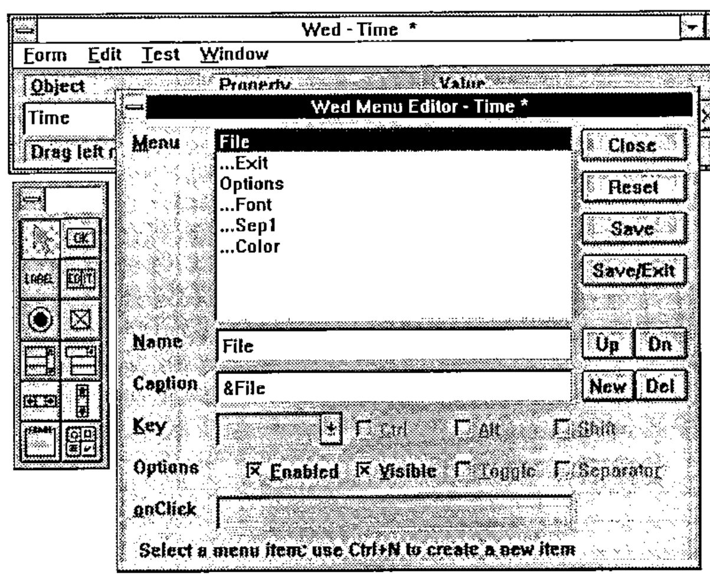
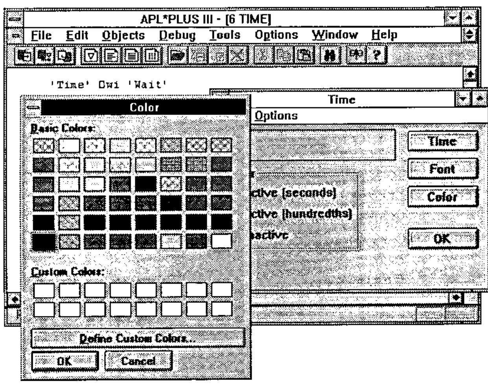
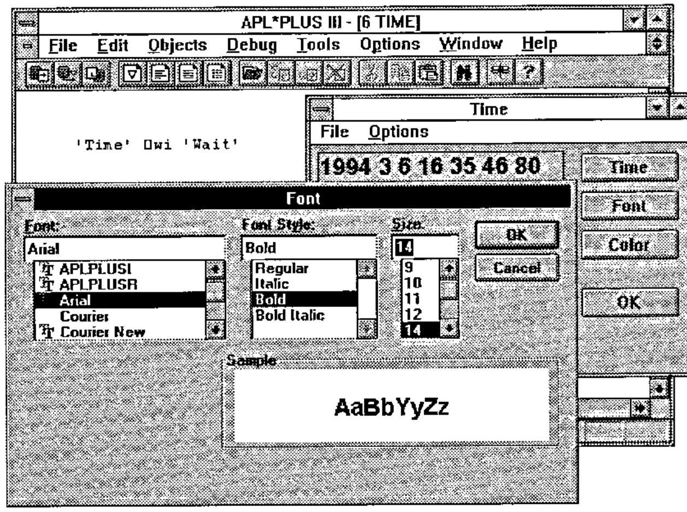
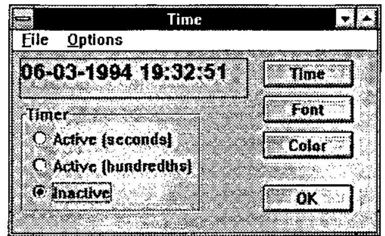

Windows Development with APL*PLUS III (Part II)
Vector 11:2, page 68
Transcribed from the printed issue; not yet reviewed. Read it in the PDF of the issue, page 68
Introduction¶
The goal of this article is to show how to approach building Windows applications with APL. To do this, we will use APL*PLUS III for Windows, version 1.1, the new product from Manugistics, Inc. You will see that programming Windows applications, a task reputed to be more difficult overall than DOS application programming, is in fact
- within the reach of all APL developers, even the most occasional ones
- much more simple than developing in APL under DOS.
The resulting applications involve much less APL code, and are much more reliable and easier to maintain. Moreover, you still continue to have 100% of the traditional characteristics of APL at your disposal, in particular its unequalled interactive development environment, its great power for modelling and data processing, and its unsurpassed speed for processing large amounts of data.
Saving Windows¶
By querying the def property of an object, we can obtain a snapshot of the object in the form of an APL variable.
For example:
Time_def←'Time' ⎕wi 'def'
⎕pw←60
Time_def
710430785 65539 19940305 162231800 OTime 8589934592 CForm 7
68 Pcaption Time C_Window 512 Pwhere 7.25 33.625 13 4
0 OTime 0 CButton 1024 Pcaption Time C_Window 512 Pwh
ere 4.875 14.5 1.5 10 HonClick Time OlTime 0 CLabel
2560 Pcaption 1994 3 5 16 22 13 400 C_Window 512 Pbord
er 1 Pwhere 1 1 1.2 20
⍴Time_def
38
⎕pw←80
Our form Time is thus saved in an APL variable named Time_def, which is a nested array of 38 elements. This variable can be:
- saved with the workspace
- stored in an APL*PLUS component file
- copied from one workspace to another, etc…
If we destroy our form Time by applying the method Delete:
we can recreate it later with the following simple instruction:
Even better, you can save only a part of a Windows form in this way, for example, a frame and all the radio buttons it contains, and re-install all of these sub-objects in another form, with one simple instruction like this:
Let’s Make Our Application More Lively!¶
We are going to modify our Windows application so it displays the time continuously in the label lTime. To do this, we need to use a new kind of object called a Timer, which is independent of our form:
The above instruction creates a Windows timer, gives it an interval property equal to 1000 milliseconds (one second) and indicates that the "callback" function to be executed at each expiration of the Timer is our function Time, which is already written.
Press Alt-Tab to make our window appear. We can see that the exact time now displays continuously in our window. Note that the button Time remains active and continues to operate correctly. To ascertain the execution speed of APL*PLUS III, let’s modify the interval property of our Timer to give it a value of 10 ms:
Press Alt-Tab to make the form reappear. We can see that the time is updated every hundredth of a second! Notice that, without closing the Time window, you can click in the APL session and continue to work without any slowdown!
The Window Editor ]WED¶
We will now make the following modifications to our window to complete it:
- move the Time button toward the top right part of the window
- Add a button Font
- Add a button Color
- Add a button OK
- Add a frame Timer, containing
- a radio button Activate (seconds)
- a radio button Activate (hundredths)
- a radio button Inactive
- Add a menu with the selections File and Options.
The ]WED editor is written in the form of a User Command so it is available in every APL workspace, even in a clear workspace. It is an interactive resource editor, that lets you create or modify windows, dialog boxes, or menus, letting you work mainly with the mouse.
After using the editor to make our modifications, the screen looks like:

The ]WED editor contains three windows:
-
The top window, called Wed
This lets you chose the object (Object) that you want to work with (left combo box), the property (Property) that you want to modify or the event that you want to handle (middle combo box), and the value (Value) that you want to give it (input field on the right).
-
The window at left (with no title)
This contains the tool palette, in which each icon represents a class of object that you can create in your window. By clicking on one of these buttons, then "dragging" with the right mouse button to set the size of the object in the form.
-
The form being edited (in this case, the form Time)
After exiting from the ]WED editor, you will find that you have a variable Time_def containing a description of our form.
The menus in our form have been created with the aid of the menu editor that you can invoke from within the Wed form by choosing the Menu option from the Edit menu or typing the "shortcut" key Ctrl-M.

From the ]WED editor you can also directly define the "callback" functions associated with events that you wish to handle in your form, and also test the functionality of your form.
After exiting from ]WED, we re-create our form with the instruction:
Having defined the menus for our form Time with the menu editor, let’s see how we could have defined them with the system function ⎕wi.
In the instructions that follow note that the periods (.) indicate the hierarchy of the menus and that the ampersand (&) indicates the character that will be underlined in the menus.
'Time.File' ⎕wi 'New' 'Menu' ('caption' '&File')
'Time.File.Exit' ⎕wi 'New' 'Menu' ('caption' 'E&xit')
('onClick' 'Exit')
'Time.Options' ⎕wi 'New' 'Menu' ('caption' '&Options')
'Time.Options.Font' ⎕wi 'New' 'Menu' ('caption' '&Font')
('Shortcut' 'F' 2)('onClick' 'Font')
'Time.Options.Sep1' ⎕wi 'New' 'Menu' ('separator' 1)
'Time.Options.Color' ⎕wi 'New' 'Color' ('caption' '&Color')
('shortcut' 'C' 2)('onClick' 'Color')
Now we need to write our "callback" functions Font and Color, as well as handle the button OK so it ends our application and closes our form.
This last task is very simple. It suffices to assign the value 2 to the style property of the OK button, with the following instruction:
Click on the OK button and note that the window is closed. To reactivate the Time form, do this:
Now let’s define the callback function Color like this:
∇ Color;A;⎕wself
[1] ⎕wself←'Time.lTime'
[2] :if ~0≡A←WChooseColor ⎕wi'color'
[3] ⎕wi 'color' (1⊃A)
[4] :end
∇
and copy the utility function WChooseColor and its subroutines into the workspace:
)copy c:\aplw\tools\windows WChooseColor WhwndOwner
SAVED 02/18/1994 08:40:15
)copy c:\aplw\tools\winapi D2C I2C W_Mem
SAVED 02/17/1994 18:15:39
Now click on the Color button. You will obtain a screen similar to the following:

Now let’s bring the Font button in our form to life. We’ll define the "callback" function Font, which modifies the font property of the lTime label, as follows:
∇ Font;A;⎕wself
[1] ⎕wself←'Time.lTime'
[2] :if ~0≡A←WChooseFont ⎕wi'font'
[3] ⎕wi 'font' (1⊃A)
[4] :end
∇
and copy the utility function WChooseFont and its subroutines into our workspace:
)copy c:\aplw\tools\windows WChooseFont
SAVED 02/18/1994 08:40:15
)copy c:\aplw\tools\winapi W2C C2I
SAVED 02/17/1994 18:15:39
Now, press the Font button in our Time form. A screen similar to the following will appear:

Activating the Menus¶
To make the menu options active, we set their onClick properties to execute the "callback" functions that are already created:
For the Exit option of the File menu to be able to close the form, it must apply the Close method to the form:
The "callback" function Close is defined as follows:
Handling the Radio Buttons¶
Using the ]WED editor, we have created a frame that we have called fTimer, and some radio buttons that we have named Seconds, Hundredths, and Inactive.
Let’s associate with each of these buttons a "callback" function to handle a mouse click.
'Time.fTimer.Seconds' ⎕wi 'onClick' 'Timer'
'Time.fTimer.Hundredths' ⎕wi 'onClick' 'Timer'
'Time.fTimer.Inactive' ⎕wi 'onClick' 'Timer'
Note that we use the same "callback" function that, for simplicity, we have called Timer. This function is defined in the following fashion:
∇ Timer;w
[1] 'tTimer' ⎕wi 'Delete'
[2] :select ⎕wi '.name'
[3] :case 'Seconds'
[4] w←'tTimer' ⎕wi 'New' 'Timer'
[5] w ⎕wi 'interval' 1000
[6] w ⎕wi 'onTimer' 'Time'
[7] Time
[8] :case 'Hundredths'
[9] w←'tTimer' ⎕wi 'New' 'Timer'
[10] w ⎕wi 'interval' 10
[11] w ⎕wi 'onTimer' 'Time'
[12] :endselect
∇
You will notice that this function uses a "control structure" of the type :SELECT …. :CASE … :CASE … :ENDSELECT (the control structures, like the system functions and system variables of APL*PLUS III, can be written with either uppercase or lowercase letters).
This is an important innovation for APL that permits the language to be structured and brings it closer to traditional languages such as Visual Basic or C++. This also simplifies reading programs and facilitates maintaining APL applications.
The function Timer begins by cancelling the timer tTimer (line 1), then tests the name of the radio button that was clicked ( ‘Seconds’, ‘Hundredths’, or ‘Inactive’). Notice that inside the callback function it is not necessary to specify the name of the object being processed in the left argument to ⎕wi.
The instruction :select tests which radio button has been clicked: if it is the button named Seconds, lines 4 through 7 are executed, and if it is button Hundredths, lines 9 through 11 are executed. The function Timer then creates a timer with an interval of 1 second if the user selected button 1, and an interval of 1/100 second if the user selected button 2.
Now we will modify our callback function Time, so it writes the data and time in a more agreeable form and so it does not show the milliseconds if the one-second timer is running.
Here is the new code for the function Time:
∇ Time;A;B;C;D
[1] A←'Time.fTimer.Seconds' ⎕wi 'value'
[2] :if A
[3] B←⎕ts[3 2 1 4 5 6]
[4] C←'G<99-99-9999 99:99:99>'
[5] D←100 100 10000 100 100 100⊥B
[6] :else
[7] B←⎕ts[3 2 1 4 5 6 7]
[8] C←'G<99-99-9999 99:99:99 999>'
[9] D←100 100 10000 100 100 100 1000⊥B
[10] :end
[11] 'Time.lTime' ⎕wi 'caption' (,C ⎕fmt D)
∇
Line 1 queries the value property of the first radio button (Seconds): the result will be 1 if the radio button is selected and 0 if it is not. Then we use the control structure :IF … :ELSE … :END to reduce the format of the time (eliminating the milliseconds) if the first radio button is selected.
On line 11 we use a "picture" type format instruction (which reminds one of those used by COBOL programmers) to format the date and time.
Our form now has the following appearance:

Low-Level Calls¶
APL*PLUS III allows you to:
- Call any other Windows application from your APL application
- Make calls to the hundreds of base functions in the Windows API
- Use any other commercially available DLL library and provide you with the services of the utilities it contains
The following section will show us how to do this.
Transforming Our Application into a Multimedia Application¶
By way of example, we are going to complete our callback function Time, so that our window beeps every fifteen seconds and plays chimes on the minute.
Calling a function in the base Windows API is done with the aid of the system function ⎕wcall. It is in general quite simple. You need to have the documentation of the Windows API at your disposal to know the list of available functions and their syntax.
Let’s call the function Windows API function MessageBeep to emit a beep sound. Try the following instruction:
A beep sound is produced and the function ⎕wcall immediately returns the result of the function MessageBeep, which is 1.
Now we will show how we can as easily call an application written in another language from APL. To illustrate this point, we have written a very small Visual Basic application, that we have compiled and called MM.EXE.
This application uses the multimedia functions of Windows to generate a sound resembling chimes, a sound recorded in a .WAV file. It makes the sound TADA.WAV supplied with Windows.
To execute our Visual Basic application from APL:
This instruction returns the instance number of the Visual Basic application. The sound TADA.WAV is then played on the sound card.
Now let’s make the final changes to our function Time to transform our Windows application into a multimedia Windows application.
∇ Time;A;B;C;D
[1] A←'Time.fTimer.Timer[1]' ⎕wi 'value'
[2] :if A
[3] B←⎕ts[3 2 1 4 5 6]
[4] C←'G<99-99-9999 99:99:99>'
[5] D←100 100 10000 100 100 100⊥B
[6] :else
[7] B←⎕ts[3 2 1 4 5 6 7]
[8] C←'G<99-99-9999 99:99:99 999>'
[9] D←100 100 10000 100 100 100 1000⊥B
[10] :end
[11] 'Time.lTime' ⎕wi 'caption' (,C ⎕fmt D)
[12] :if A
[13] :select B[6]
[14] :case 0
[15] A←⎕wcall 'WinExec' 'c:\vb\work\mm.exe' 'sw_show'
[16] :caselist 15 30 45
[17] A←⎕wcall 'MessageBeep' 0
[18] :end
[19] :end
∇
To do this, we add lines 11 through 17. Note the nested control structures, and the possibility of using the :caselist option with the :select control structure.
B[6] represents the sixth element of our date/time vector, the seconds. In the case where it strikes the minute mark (:case 0), it calls our Visual Basic application to play the chimes, and in the case where the seconds are valued 15, 30, or 45 (:caselist 15 30 45), it only produces the beep sound.
Conclusion¶
Windows programming becomes something very simple with the object-oriented tools of APL*PLUS III. Very few of the languages or tools on the market let you develop under Windows as easily and as rapidly. Even Visual Basic, which we have used for several months, proves to be more laborious and slower overall than APL*PLUS III. C is undoubtedly faster in execution, but consumes much more time (and therefore costs) in development.
APL is simultaneously becoming more innovative and better structured. The examples in this complete application show clearly that it is now possible to develop APL applications using few APL primitives and yielding programs that are easily readable and maintainable.
What gives APL its remarkable power remains, as always:
- its remarkable interactivity
- its great powers in handling arrays of data.
Very few languages fit with Windows as well as APL. Those APL users who are already developing under Windows are enjoying these benefits now.
Listing of the APL Programs for the WinTime Application¶
We have named our little Windows application WinTime. The main function WinTime repeats the main instructions (used in calculator mode in this article) that create our application’s windows.
Note that in real application development you would not need to write a function like this, with the position and properties of every object coded by hand. Instead you would design the form with the visual editor ]wed and interactively develop and test the code that works with it. Then, you would generate this main function automatically using the utility command ]wmake that is part of the built-in utility library of APL*PLUS III.
Following the main function are all the functions in the WinTime application. Note also that all the lines in certain functions have been commented to make them easier to read. Other programs have been abundantly explained in the article.
An excellent practice that we recommend to everyone is systematically to include a comment on each line of code and to align the comment symbols in column 40 (that is, in the middle of the screen). This facilitates maintenance of the code and, moreover, forces one to write short lines of code.
∇ WinTime;w
[1] ⍝∇ Sample Windows Application written in APL*PLUS III v1.1
[2] ⍝∇ Eric Lescasse 18-02-1994
[3]
[4] 'Time' ⎕wi 'Delete' ⍝ deletion of the form
[5]
[6] w←'Time' ⎕wi 'New' 'Form' ⍝ creation of the form
[7] w ⎕wi 'onDestroy' 'KillTimer'
[8] w←'Time.Time' ⎕wi 'New' 'Button'
[9] w ⎕wi 'where' .5 28 1.5 10
[10] w ⎕wi 'onClick' 'Time'
[11] w←'Time.Font' ⎕wi 'New' 'Button'
[12] w ⎕wi 'where' 2.5 28 1.5 10
[13] w ⎕wi 'onClick' 'Font'
[14] w←'Time.Color' ⎕wi 'New' 'Button'
[15] w ⎕wi 'where' 4.5 28 1.5 10
[16] w ⎕wi 'onClick' 'Color'
[17] w←'Time.OK' ⎕wi 'New' 'Button'
[18] w ⎕wi 'where' 7.5 28 1.5 10
[19] w ⎕wi 'style' 2
[20] w←'Time.lTime' ⎕wi 'New' 'Label'
[21] w ⎕wi 'caption' ''
[22] w ⎕wi 'border' 1
[23] w ⎕wi 'where' .5 1 2 25
[24] w←'Time.fTimer' ⎕wi 'New' 'Frame'
[25] w ⎕wi 'where' 3 1 6 20
[26] w←'Time.fTimer.Seconds' ⎕wi 'New' 'Option'
[27] w ⎕wi 'caption' 'Active (seconds)'
[28] w ⎕wi 'onClick' 'Timer'
[29] w ⎕wi 'where' 1.25 1.25 1.27 17.5
[30] w←'Time.fTimer.Hundredths' ⎕wi 'New' 'Option'
[31] w ⎕wi 'caption' 'Active (hundredths)'
[32] w ⎕wi 'onClick' 'Timer'
[33] w ⎕wi 'where' 2.75 1.25 1.27 17.5
[34] w←'Time.fTimer.Inactive' ⎕wi 'New' 'Option'
[35] w ⎕wi 'caption' 'Inactive'
[36] w ⎕wi 'onClick' 'Timer'
[37] w ⎕wi 'where' 4.25 1.25 1.27 17.5
[38]
[39] w←'Time.File' ⎕wi 'New' 'Menu' ⍝ menu definitions
[40] w ⎕wi 'caption' '&File'
[41] w←'Time.File.Exit' ⎕wi 'New' 'Menu'
[42] w ⎕wi 'caption' '&Exit'
[43] w ⎕wi 'onClick' 'Close'
[44] w←'Time.Options' ⎕wi 'New' 'Menu'
[45] w ⎕wi 'caption' '&Options'
[46] w←'Time.Options.Font' ⎕wi 'New' 'Menu'
[47] w ⎕wi 'caption' '&Font'
[48] w ⎕wi 'shortcut' 'F' 2
[49] w ⎕wi 'onClick' 'Font'
[50] w←'Time.Options.Sep1' ⎕wi 'New' 'Menu'
[51] w ⎕wi 'separator' 1
[52] w←'Time.Options.Color' ⎕wi 'New' 'Menu'
[53] w ⎕wi 'caption' '&Color'
[54] w ⎕wi 'shortcut' 'C' 2
[55] w ⎕wi 'onClick' 'color'
[56] 'Time' ⎕wi 'Wait' ⍝ call the window
∇
∇ Time;A;B;C;D
[1] A←'Time.fTimer.Seconds' ⎕wi 'value'
[2] :if A
[3] B←⎕ts[3 2 1 4 5 6]
[4] C←'G<99-99-9999 99:99:99>'
[5] D←100 100 10000 100 100 100 ⊥B
[6] :else
[7] B←⎕ts[3 2 1 4 5 6 7]
[8] C←'G<99-99-9999 99:99:99 999>'
[9] D←100 100 10000 100 100 100 1000 ⊥B
[10] :end
[11] 'Time.lTime' ⎕wi 'caption' (,C ⎕fmt D)
[12] :if A
[13] :select B[6]
[14] :case 0
[15] A←⎕wcall 'WinExec' 'c:\vb\work\mm.exe' 'sw_show'
[16] :caselist 15 30 45
[17] A←⎕wcall 'MessageBeep' 0
[18] :end
[19] :end
∇
∇ Font;A;⎕wself
[1] ⎕wself←'Time.lTime' ⍝ be on the object lTime
[2] :if ~0≡A←WChooseFont ⎕wi'font' ⍝ call the font dialog box
[3] ⎕wi 'font' (1⊃A) ⍝ apply font to lTime
[4] :end
∇
∇ Color;A;⎕wself
[1] ⎕wself←'Time.lTime' ⍝ move to form
[2] :if ~0≡A←WChooseColor ⎕wi'color' ⍝ color choice dialog box
[3] ⎕wi 'color' (1⊃A) ⍝ apply to label lTime
[3] :end
∇
∇ Timer;w
[1] 'tTimer' ⎕wi 'Delete' ⍝ clear existing timer
[2] :select ⎕wi '.name' ⍝ which radio button?
[3] :case 'Seconds' ⍝ if it's the first...
[4] w←'tTimer' ⎕wi 'New' 'Timer' ⍝ we create a timer ...
[5] w ⎕wi 'interval' 1000 ⍝ with a 1sec interval
[6] w ⎕wi 'onTimer' 'Time' ⍝ exec Time when fired
[7] Time ⍝ and update the time
[8] :case 'Hundredths' ⍝ if it's the sec button
[9] w←'tTimer' ⎕wi 'New' 'Timer' ⍝ we create a timer
[10] w ⎕wi 'interval' 10 ⍝ with a 1/100s interval
[11] w ⎕wi 'onTimer' 'Time' ⍝ run Time each 1/100s
[12] :endselect
∇
∇ Close;A
[1] A←'Time' ⎕wi 'Close' ⍝ close the form
∇
∇ KillTimer
[1] 'tTimer' ⎕wi 'Delete' ⍝ 'kill' the timer
∇